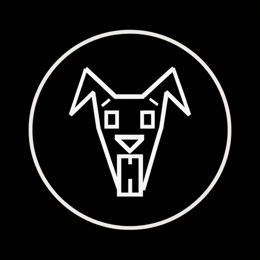
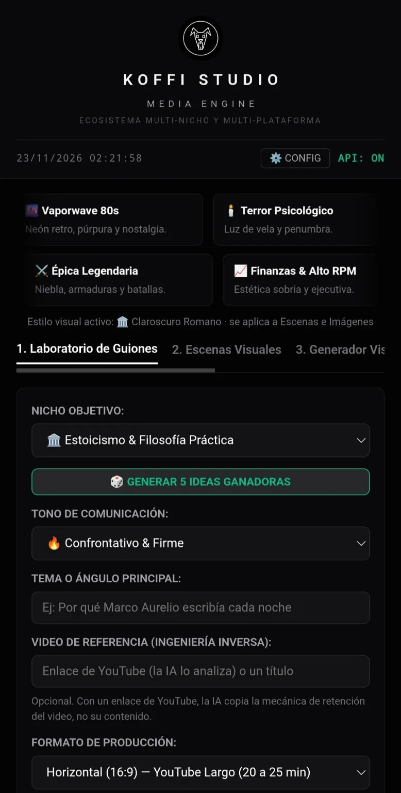
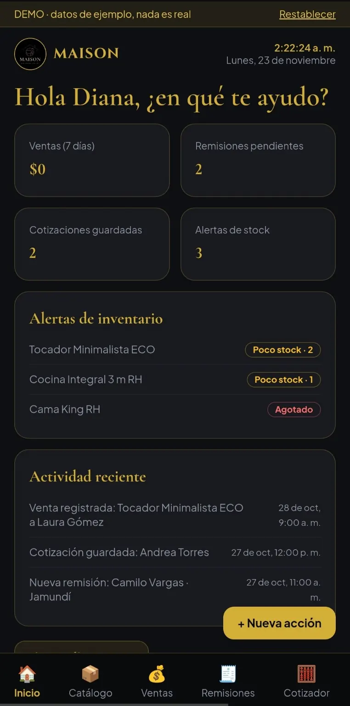
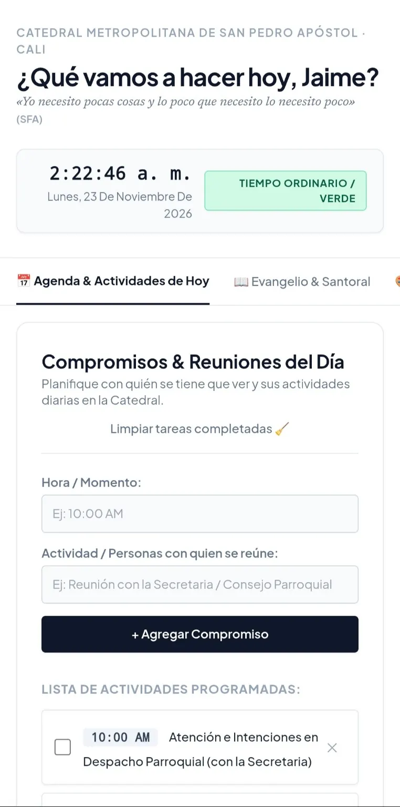
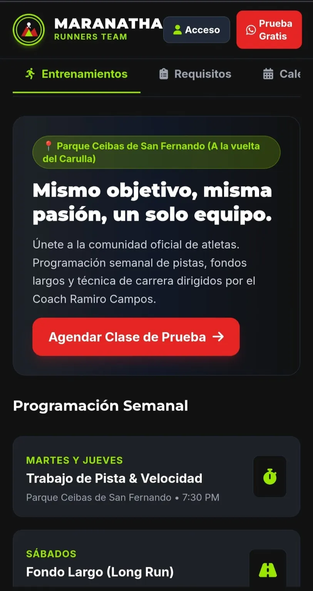
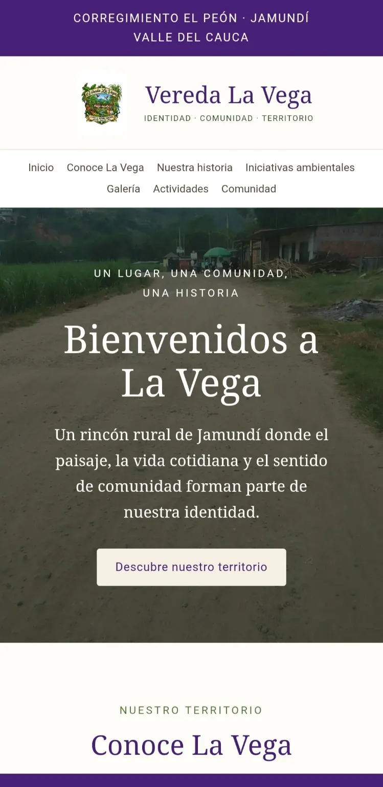
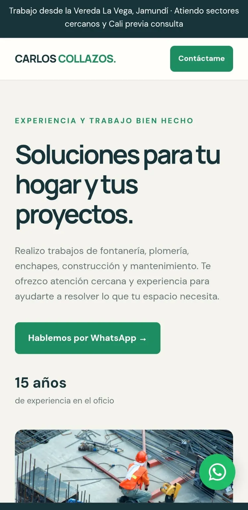

páginas web
sitios ligeros y adaptados a celulares para presentar tu actividad, tus servicios y facilitar el contacto con tus clientes.

johnny romaarquitectura de soluciones digitales
diseño páginas web y herramientas digitales para profesionales independientes, comunidades y pequeños negocios.
diseño · desarrollo web · herramientas digitales
el punto de partida
la tecnología debe resolver problemas reales. sin complicar lo que puede ser sencillo.
01 — lo que hago
cada proyecto empieza por entender qué necesitas y termina con una solución útil, clara y fácil de utilizar.
sitios ligeros y adaptados a celulares para presentar tu actividad, tus servicios y facilitar el contacto con tus clientes.
herramientas digitales sencillas para organizar información, gestionar tareas o facilitar actividades cotidianas.
asistentes personalizados que ayudan a consultar información, preparar contenidos y resolver tareas concretas.
02 — una selección
una muestra de páginas web y herramientas digitales creadas para necesidades concretas. cada proyecto indica claramente su estado.

ecosistema propio para organizar y asistir distintas etapas de producción audiovisual, desde la idea hasta los recursos visuales.
explorar proyecto ↗
prototipo de herramienta para visualizar inventario, ventas, cotizaciones, remisiones y alertas de existencias. utiliza datos de demostración.
explorar demostración ↗
herramienta de apoyo para organizar compromisos, reuniones y actividades diarias en un contexto institucional.
explorar demostración ↗
espacio digital para una comunidad de atletas con información de entrenamientos, requisitos y actividades deportivas.
explorar demostración ↗
sitio web para presentar la identidad, la historia, el territorio y las iniciativas de una comunidad rural de Jamundí.
visitar sitio web ↗
sitio web para presentar servicios de fontanería, plomería, enchapes, construcción y mantenimiento.
ver sitio web ↗los prototipos pueden utilizar datos de ejemplo. las imágenes muestran las interfaces de referencia y cada enlace abre su respectiva demostración o sitio.
03 — quién está detrás
soy johnny roma, arquitecto de soluciones digitales. me interesa encontrar formas prácticas de utilizar la tecnología para resolver necesidades concretas.
trabajo desde una idea sencilla: una buena solución no tiene que ser complicada para ser valiosa. debe entenderse, servir y facilitar el día a día de quien la utiliza.
conversemos04 — contacto
cuéntame qué necesitas. podemos empezar por una conversación.